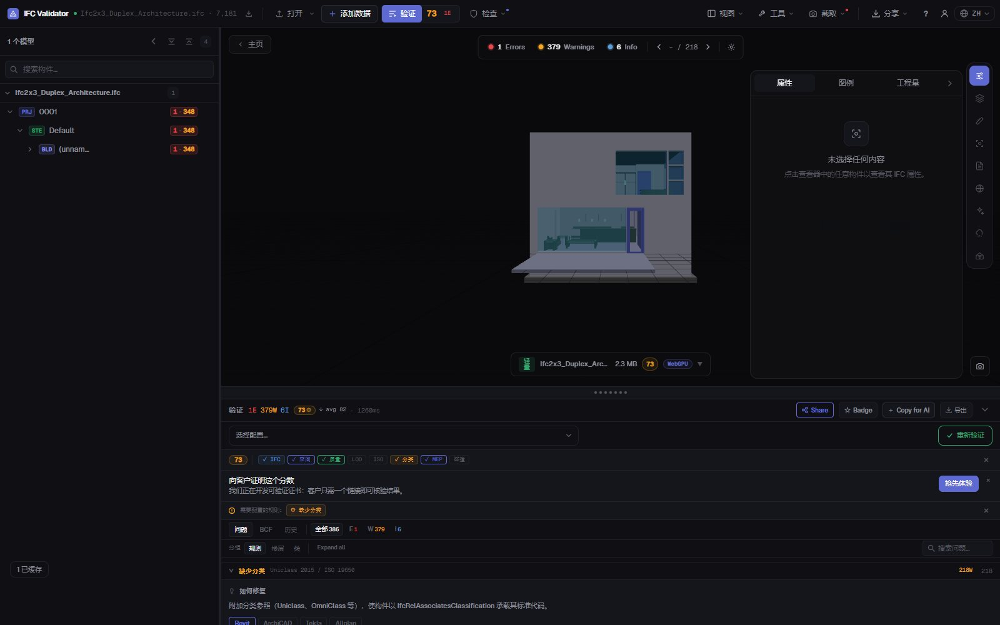
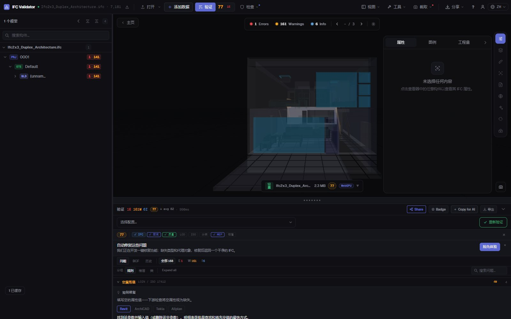

IFC 分类检查
Uniclass、OmniClass、属性集
找出 IFC 中所有没有分类引用的构件（任意分类体系，或仅限 BIM 执行计划要求的体系），以及缺失的属性集、空值和不符合命名规则的名称。每个问题都会列出、计数并在 3D 中显示。
检查分类 — 免费 →无需账号 · 不上传任何内容 · 在浏览器中运行 · 免费

功能
交付前的分类与数据检查
BIM 协调员在模型进入 CDE 前要做的检查。
缺少分类
所有没有 IfcClassificationReference 的实体构件，可接受任意体系或仅限指定体系（Uniclass 2015、OmniClass、CCS、NL-SfB 等）。
通过 IDS 检查分类
加载 buildingSMART IDS 文件，按构件类型要求特定体系和编码；完整支持 IDS 分类维度。
属性集验证
按构件类别检查缺失的必需属性集和空值属性。
命名规则
按 BEP 中的模式检查名称，并找出空名称和重复名称（可批量重命名）。
3D 显示
在模型中隔离任一检查未通过的构件，其余半透明显示，并可逐个跳转。
可导出
将问题以 BCF 发送给作者，或下载 CSV、JSON 报告或可打印的交付报告。
截图

常见问题
常见问题
如何检查 IFC 模型的分类？
在 IFC Viewer Online 中打开 IFC，启用分类规则后进行验证（ISO 19650 和协调配置文件已包含）。它会列出所有没有分类引用的构件并在 3D 中显示。若要按构件类型要求特定体系和编码，请加载 IDS 文件。
支持哪些分类体系？
文件中以 IfcClassification / IfcClassificationReference 存储的任何体系：Uniclass 2015、OmniClass、CCS、NL-SfB、CoClass、MasterFormat 或自定义体系。可接受任意体系或仅限指定体系。
也能验证属性集吗？
能。规则会标出缺失的必需属性集和空值，IDS 文件还可要求特定属性、数据类型和取值。
模型会被上传吗？
不会。检查通过 WebAssembly 在浏览器中运行，IFC 不会离开您的电脑。任何用途免费，无需账号。
可以与模型作者分享结果吗？
可以：导出为 BCF 2.1 供其建模软件使用，或导出 CSV、JSON，或可打印的交付报告。